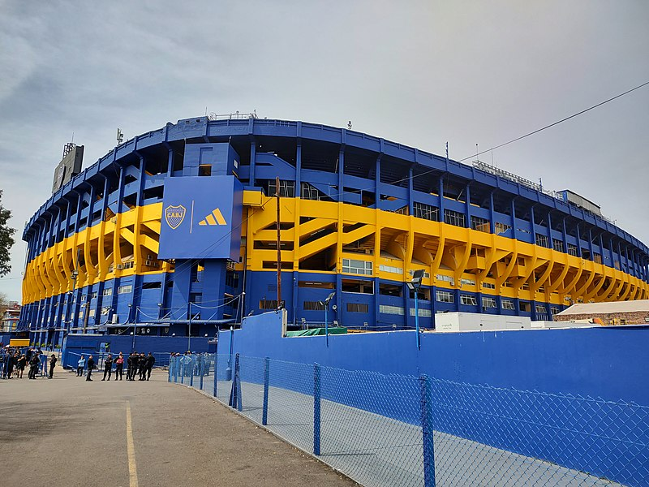

Boca y el plan de ampliación del monumental
El proyecto Bombonera 360 plantea la posibilidad de aumentar el aforo del
estadio a alrededor de 80 mil espectadores. Sin embargo, recién este mes
de marzo, en el último año de gestión de la presidencia de Ameal que comenzó
en 2019, se presentará el proyecto de zonificación en la Legislatura.
En el interín, la dirigencia trabajó tanto en remodelaciones como en
redistribuciones más puntuales. Allí es donde aparece la Platea K,
que pronto pasará a ser Sector.
Desde hace un tiempo, en Boca comenzaron un trabajo de reubicación con los
abonados que tenían sus plateas en esa tribuna, la tercera bandeja Norte,
arriba de la que tradicionalmente ocupa La 12. Ese sector, antes ocupado por
asientos, pronto volverá a lucir tan solo escalones y paraavalanchas. Es que,
según informó Infobae, el Departamento de Obras buscará terminar esa
remodelación en dos tramos durante 2023, ganando mil lugares más a mediados de
año y alcanzando una capacidad total de 59 mil personas a fin de año,
recuperando en su totalidad las seis bandejas populares como solía ser antes
en La Bombonera.